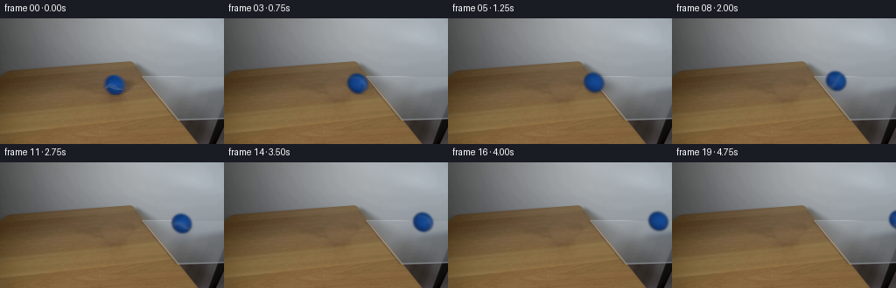
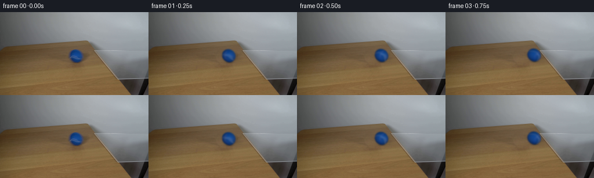

CODING AGENTS AS PIXEL WORLD MODELS
traex/GPT-6.1-Sol · 0025
点击播放 · 原生 RGB 像素
逐轮保存的候选
回放视频、检查图与代码变化。
每份候选均可单独播放。实际图片检查记录在下方工具轨迹中。
候选 01播放与检查图
点击播放 · 原生 RGB 像素


展开代码变化
--- 上一保存版本
+++ 本次保存版本
@@ -0,0 +1,158 @@
+from pathlib import Path
+import numpy as np
+from PIL import Image
+import cv2
+from scipy.ndimage import gaussian_filter, map_coordinates
+from scipy.special import ndtr
+import artifact_io
+
+ROOT = Path(__file__).resolve().parent
+
+def reconstruct_background(im):
+ y,x=np.mgrid[:144,:256]
+ cx,cy=130.8,75.9
+ # Replace only the ball and its existing soft shadow, borrowing neighboring
+ # wood of the same perspective and matching the local illumination.
+ source=cv2.remap(im.astype(np.float32),(x-52).astype(np.float32),
+ (y+4.3).astype(np.float32),cv2.INTER_LINEAR,
+ borderMode=cv2.BORDER_REFLECT).astype(float)
+ rad=np.hypot(x-cx,y-cy)
+ ring=(rad>17)&(rad<24)&(y>58)&(y<96)&(x>108)&(x<164)
+ ring &= ~((x>136)&(y>68)&(y<89))
+ design=np.stack([np.ones_like(x),(x-cx)/30,(y-cy)/30],-1)
+ coefficients=np.linalg.lstsq(design[ring],im[ring]-source[ring],rcond=None)[0]
+ replacement=source+design@coefficients
+ region=(rad<15.2)|(((x-140)/14)**2+((y-78)/8)**2<1)|(((x-133)/12)**2+((y-88)/5)**2<1)
+ matte=gaussian_filter(region.astype(float),1.)
+ return im*(1-matte[...,None])+replacement*matte[...,None]
+
+
+def prepare_texture(im,bg):
+ y,x=np.mgrid[:144,:256]
+ cx,cy,rx,ry=130.8,75.9,11.75,11.40
+ ny=(y-cy)/ry
+ nx=(x-cx-.089*(y-cy))/rx
+ rho=np.hypot(nx,ny)
+ nz=np.sqrt(np.maximum(0,1-rho*rho))
+ alpha=ndtr((1-rho)*rx/1.25)
+ fore=(im-bg*(1-alpha[...,None]))/np.maximum(alpha[...,None],.075)
+ # Estimate body illumination from blue felt, excluding the pale curved seam.
+ pick=(rho<.81)&(fore[:,:,0]<28)
+ basis=np.stack([np.ones_like(nx),nz,ny,nx,ny*ny],-1)
+ coeff=np.linalg.lstsq(basis[pick],fore[pick],rcond=None)[0]
+ # Lighting extrapolation around the silhouette is constrained to blue felt.
+ illum=np.clip(basis@coeff,[8,30,70],[30,80,155])
+ residual=np.clip(fore-illum,[-12,-10,-12],[40,30,20])
+ return coeff,residual
+
+
+def lighting(nx,ny,nz,coeff):
+ a=np.stack([np.ones_like(nx),nz,ny,nx,ny*ny],-1)
+ return np.clip(a@coeff,[8,30,70],[30,80,155])
+
+
+def rotate_to_material(nx,ny,nz,angle):
+ axis=np.array([.067,.755,.652]);axis/=np.linalg.norm(axis)
+ # Inverse Rodrigues rotation. Surface color travels with the rolling sphere.
+ v=np.stack([nx,ny,nz],-1)
+ c,s=np.cos(angle),np.sin(angle)
+ return v*c-np.cross(axis,v)*s+(v@axis)[...,None]*axis*(1-c)
+
+
+def sphere_layer(cx,cy,scale,angle,coeff,residual,supersample=4):
+ s=supersample
+ # Work only on a small tile surrounding the ball.
+ x0=int(np.floor(cx-18*scale));y0=int(np.floor(cy-18*scale))
+ w=h=int(np.ceil(36*scale))+2
+ yy,xx=np.mgrid[:h*s,:w*s]
+ x=x0+(xx+.5)/s-.5;y=y0+(yy+.5)/s-.5
+ rx=11.75*scale;ry=11.40*scale
+ ny=(y-cy)/ry;nx=(x-cx-.089*(y-cy))/rx
+ r2=nx*nx+ny*ny
+ nz=np.sqrt(np.maximum(0,1-r2))
+ inside=r2<=1
+ # Use the nearest spherical surface at the limb for convolution.
+ rr=np.sqrt(np.maximum(r2,1.))
+ nx0=nx/rr;ny0=ny/rr
+ base=lighting(nx0,ny0,nz,coeff)
+ mat=rotate_to_material(nx0,ny0,nz,angle)
+ mx,my,mz=mat[...,0],mat[...,1],mat[...,2]
+ phi=np.arctan2(mx,mz)
+ lat=np.arcsin(np.clip(my,-1,1))
+ seam_lat=.25+.18*np.sin(2*phi)
+ curve=np.exp(-.5*((lat-seam_lat)/.103)**2)
+ # Felt's low-contrast stitching, rather than a stark painted white stripe.
+ proc=curve[...,None]*np.array([27.,15.,2.])
+ detail=(np.sin(36*mx+17*my+9*mz)*np.sin(27*my-21*mz+4*mx)
+ +.35*np.sin(78*mx+33*my))*1.4
+ proc+=detail[...,None]*np.array([.8,1.,1.3])
+ # Original visible-hemisphere felt and seam provide the actual initial texture.
+ tx=130.8+11.75*mx+.089*11.40*my
+ ty=75.9+11.40*my
+ original=np.stack([map_coordinates(residual[:,:,c],[ty,tx],order=1,
+ mode='nearest') for c in range(3)],-1)
+ weight=np.clip((mz-.23)/.32,0,1)
+ weight=weight*weight*(3-2*weight)
+ pigment=proc*(1-weight[...,None])+original*weight[...,None]
+ color=np.clip(base+pigment,0,255)
+ alpha=inside.astype(float)
+ # Optical softness matched to the input photograph; premultiplied filtering
+ # avoids carrying a wood-colored fringe onto the transparent overhang.
+ sigma=1.05*s
+ alpha=gaussian_filter(alpha,sigma)
+ prem=np.stack([gaussian_filter(color[:,:,c]*inside,sigma) for c in range(3)],-1)
+ alpha=alpha.reshape(h,s,w,s).mean((1,3))
+ prem=prem.reshape(h,s,w,s,3).mean((1,3))
+ return x0,y0,prem,alpha
+
+
+def overlay(im,x0,y0,prem,alpha):
+ h,w=alpha.shape
+ xa=max(x0,0);ya=max(y0,0);xb=min(x0+w,256);yb=min(y0+h,144)
+ if xa>=xb or ya>=yb:return
+ px=xa-x0;py=ya-y0
+ sl=np.s_[py:py+yb-ya,px:px+xb-xa]
+ im[ya:yb,xa:xb]=im[ya:yb,xa:xb]*(1-alpha[sl][...,None])+prem[sl]
+
+
+def generate():
+ first=np.asarray(Image.open(ROOT/'first_frame.png').convert('RGB'))
+ im=first.astype(float)
+ bg=reconstruct_background(im)
+ coeff,residual=prepare_texture(im,bg)
+ y,x=np.mgrid[:144,:256]
+ frames=[first.copy()]
+ for i in range(1,20):
+ t=i/4.
+ distance=29.0*t-.5*.85*t*t
+ cx=130.8+distance
+ cy=75.9-.081*distance
+ scale=1-.00029*distance
+ angle=distance/11.6
+ canvas=bg.copy()
+ # The wood/glass edge is oblique, and the path crosses it at x~178.
+ on_glass=1/(1+np.exp(-(cx-178)/3.1))
+ shadow=np.exp(-.5*(((x-cx-6.0)/(10.3*scale))**2+
+ ((y-cy-4.2)/(5.0*scale))**2))
+ foot=np.exp(-.5*(((x-cx-.7)/(4.1*scale))**2+
+ ((y-cy-11.2*scale)/(1.25*scale))**2))
+ amount=(.19*shadow+.21*foot)*(1-.91*on_glass)
+ canvas*=1-amount[...,None]
+ # A weak, compressed blue reflection on the clear pane. Reflection is
+ # restricted to glass and becomes visible only after the transition.
+ glass_edge=(y-49.5)/1.37+151
+ glass=(x>glass_edge)&(y>66)&(y<115.5)
+ re=np.exp(-.5*(((x-cx-1)/(8.8*scale))**2+
+ ((y-cy-17.3*scale)/(4.5*scale))**2))
+ refl=.061*on_glass*re*glass
+ canvas=canvas*(1-refl[...,None])+np.array([25,64,115])*refl[...,None]
+ xx,yy,prem,alpha=sphere_layer(cx,cy,scale,angle,coeff,residual)
+ overlay(canvas,xx,yy,prem,alpha)
+ frames.append(np.uint8(np.rint(np.clip(canvas,0,255))))
+ frames=np.stack(frames)
+ assert frames.shape==(20,144,256,3)
+ assert np.array_equal(frames[0],first)
+ artifact_io.save(frames,ROOT)
+
+if __name__=='__main__':
+ generate()
可观测工具轨迹
实际执行的命令与返回图片。
命令 1exit 0
/bin/bash -lc 'ls -la && cat prompt.txt && cat GENERATION_RULES.md'
命令 2exit 0
/bin/bash -lc "cat artifact_io.py && python - <<'PY'
from PIL import Image
import numpy as np
im=np.array(Image.open('first_frame.png'))
print(im.shape)
for y in range(0,144,4):
s=''
for x in range(0,256,4):
r,g,b=im[y:y+4,x:x+4].mean((0,1));
if b>r*1.3 and b>g*1.1: c='B'
elif max(r,g,b)-min(r,g,b)<15 and min(r,g,b)>205:c=' '
elif r>g*1.07 and g>b*1.08:c='w' if r>150 else 'W'
elif min(r,g,b)<80:c='#'
elif min(r,g,b)<150:c='o'
else:c='.'
s+=c
print(f'{y:03d} {s}')
PY"命令 3exit 0
/bin/bash -lc "python - <<'PY'
from PIL import Image
import numpy as np
im=np.array(Image.open('first_frame.png'))
for y in [0,20,40,50,55,60,65,70,75,80,85,90,100,110,120,130,140]:
print(y,[(x,tuple(im[y,x])) for x in [0,20,40,60,80,100,120,130,140,150,160,170,180,190,200,220,240,255]])
print('detail:')
for y in range(42,128,2):
s=''
for x in range(80,256,2):
r,g,b=im[y:y+2,x:x+2].mean((0,1))
if b>r*1.25 and b>g*1.1: c='B' if b>80 else 'b'
elif r>g*1.2 and g>b*1.12:c='T' if r>100 else 't'
elif r>g*1.15 and g>b*1.08:c='w'
elif max(r,g,b)-min(r,g,b)<12: c=' ' if r>185 else ('.' if r>150 else ('o' if r>110 else ('#' if r>70 else '@')))
else:c='s'
s+=c
print(f'{y:3d} {s}')
PY"命令 4exit 0
/bin/bash -lc "python - <<'PY'
import cv2,numpy as np
im=cv2.imread('first_frame.png'); gray=cv2.cvtColor(im,cv2.COLOR_BGR2GRAY)
e=cv2.Canny(gray,10,25)
ls=cv2.HoughLinesP(e,1,np.pi/720,threshold=18,minLineLength=15,maxLineGap=5)
print(sorted([list(l[0]) for l in ls],key=lambda z: -((z[0]-z[2])**2+(z[1]-z[3])**2)))
for y in range(45,121):
s=''
for x in range(150,256):
s+='X' if e[y,x] else ' '
print(f'{y:3d}|{s}|')
PY"命令 5exit 0
/bin/bash -lc "python - <<'PY'
import numpy as np,cv2
im=cv2.imread('first_frame.png')[:,:,::-1].astype(float)
for x in [150,160,170,180,190,200,210,220,230,240,250,255]:
print('\\nx=',x)
for y in range(45,121):
p=im[y,x]; d=np.linalg.norm(im[y+1,x]-p)
if d>6: print(y,','.join(str(int(i)) for i in p),'change',round(d,1))
PY"命令 6exit 0
/bin/bash -lc "python - <<'PY'
import numpy as np
from PIL import Image
im=np.array(Image.open('first_frame.png'))
for y in range(60,94):
print(f'{y:3}', end=' ')
for x in range(112,158):
r,g,b=map(int,im[y,x]);
if b-r>35 and b-g>25:c='B'
elif b-r>15 and b-g>10:c='b'
elif b>r and b>g:c='s'
elif r<80:c='#'
elif r<100:c='o'
elif r<115:c='.'
else:c=' '
print(c,end='')
print()
print('ball crop rgb')
for y in [63,65,67,70,73,76,79,82,85,87]:
print(y,[(x,list(map(int,im[y,x]))) for x in range(118,146,3)])
PY"命令 7exit 0
/bin/bash -lc "python - <<'PY'
import numpy as np
from PIL import Image
im=np.array(Image.open('first_frame.png')).astype(float)
# Show a single-channel luminosity map using ASCII without visual image tools.
cs=' .,:;irsXA253hMHGS#9B&@'
for y in range(61,90):
print(f'{y:3} '+''.join(cs[int(np.clip((im[y,x,0]-8)/105,0,1)*(len(cs)-1))] for x in range(115,150)))
PY"命令 8exit 0
/bin/bash -lc "python - <<'PY'
import numpy as np,cv2
im=cv2.imread('first_frame.png')[:,:,::-1].astype(float)
y,x=np.mgrid[:144,:256];
# print chroma matte signal bounds
sig=im[:,:,2]-im[:,:,0]
for yy in range(61,91):
ids=np.where(sig[yy,110:155]>0)[0]+110
if len(ids): print(yy,ids.min(),ids.max(), 'signals',[(xx,int(sig[yy,xx])) for xx in [117,118,119,120,121,122,140,141,142,143,144]])
PY"命令 9exit 0
/bin/bash -lc "python - <<'PY'
import numpy as np
from PIL import Image
from scipy.optimize import least_squares
im=np.array(Image.open('first_frame.png')).astype(float)
y,x=np.mgrid[61:91,115:149]
# red separation edge fitting blurred disk profile vs smooth intrinsic lighting
from scipy.special import ndtr
# background approximated row interp excluding shadow
bg=np.zeros((30,34,3))
for j,yy in enumerate(range(61,91)):
for c in range(3):bg[j,:,c]=np.interp(x[j], [114,155], [im[yy,114,c],im[yy,155,c]])
obs=im[61:91,115:149]
def calc(p):
cx,cy,r,sig,br,bg_,bb=p
d=np.sqrt((x-cx)**2+(y-cy)**2)
a=ndtr((r-d)/sig)
z=np.sqrt(np.maximum(0,1-(d/r)**2))
col=np.stack([np.full(x.shape,br),bg_+12*z,bb+22*z],-1)
return bg*(1-a[:,:,None])+col*a[:,:,None]
# select outer & no seam low r inner
pick=((obs[:,:,0]<30)|(((x-131.2)**2+(y-75.6)**2)>10**2))
def fun(p):
return (calc(p)-obs)[pick].ravel()
p=least_squares(fun,[131.2,75.7,11.1,1.0,14,51,107],bounds=([129,74,9,.3,0,35,80],[133,78,13,2,40,70,140])).x
print('fit',p, 'rmse',np.sqrt(np.mean(fun(p)**2)))
PY"命令 10exit 0
/bin/bash -lc "cat > .tmp/analyze.py <<'PY'
import numpy as np, cv2
from PIL import Image
from scipy.ndimage import gaussian_filter
im=np.array(Image.open('first_frame.png')).astype(float)
y,x=np.mgrid[:144,:256]
cx,cy,r=131.05,75.95,11.45
rad=np.hypot(x-cx,y-cy)
mask=gaussian_filter((rad<13.4).astype(float),.6)>.015
mask|=(((x-140)/15)**2+((y-80)/10)**2<1)
roi=(x>112)&(x<159)&(y>59)&(y<94)
# same grain direction shifts. Find matching nearby patch using ring pixels.
ring=(rad>16.5)&(rad<22)&roi&~mask
ring&=~((x>133)&(y>69)&(y<91))
errs=[]
for dx in range(-70,-25):
for dy in range(1,9):
src=cv2.remap(im.astype(np.float32),(x+dx).astype(np.float32),(y+dy).astype(np.float32),cv2.INTER_LINEAR,borderMode=cv2.BORDER_REFLECT)
z=im[ring]-src[ring]; shift=np.median(z,0)
err=np.mean(np.minimum((z-shift)**2,100))
errs.append((err,dx,dy,shift))
print(sorted(errs,key=lambda z:z[0])[:12])
# background fit using shift top result
_,dx,dy,_=min(errs,key=lambda z:z[0])
src=cv2.remap(im.astype(np.float32),(x+dx).astype(np.float32),(y+dy).astype(np.float32),cv2.INTER_LINEAR,borderMode=cv2.BORDER_REFLECT)
# RGB difference planar for vignetting subtle
A=np.stack([np.ones_like(x),(x-cx)/30,(y-cy)/30],-1)
coef=np.linalg.lstsq(A[ring],im[ring]-src[ring],rcond=None)[0]
print('coef',coef)
new=src+A@coef
# patch feather mask
m=gaussian_filter(mask.astype(float),1.1)
bg=im*(1-m[...,None])+new*m[...,None]
Image.fromarray(np.uint8(np.clip(bg,0,255))).save('.tmp/background.png')
np.save('.tmp/bg.npy',bg)
# unmatting provisional at edge profile alpha
from scipy.optimize import least_squares
from scipy.special import ndtr
pick=(rad<17)&(rad>9)&(y<74)
def forward(p):
cx,cy,r,sig=p[:4]
rr=np.hypot(x-cx,y-cy)
a=gaussian_filter((rr<r).astype(float),sig)
nz=np.sqrt(np.maximum(0,1-((x-cx)/r)**2-((y-cy)/r)**2))
base=np.stack([12+5*nz,42+28*nz,92+52*nz],-1)
return bg*(1-a[...,None])+base*a[...,None],a
# differentiable use cdf for approx fit
def calc(p):
rr=np.hypot(x-p[0],y-p[1]);a=ndtr((p[2]-rr)/p[3]); nz=np.sqrt(np.maximum(0,1-(rr/p[2])**2));base=np.stack([12+5*nz,42+28*nz,92+52*nz],-1)
return bg*(1-a[...,None])+base*a[...,None]
res=least_squares(lambda p:(calc(p)-im)[pick].ravel(),[131,75.7,11.4,1.3],bounds=([130,75,10,.5],[132,77,13,2]))
print('profile',res.x)
for y0 in [65,67,69,71,73,75,77,79,81,83,85,87]:
print(y0,'bg',bg[y0,131].round(1),'im',im[y0,131])
PY
python .tmp/analyze.py"命令 11exit 0
/bin/bash -lc "python - <<'PY'
import numpy as np
from PIL import Image
from scipy.optimize import least_squares
from scipy.special import ndtr
im=np.array(Image.open('first_frame.png')).astype(float);bg=np.load('.tmp/bg.npy');y,x=np.mgrid[:144,:256];reg=(x>112)&(x<155)&(y>60)&(y<92)
def fun(p):
cx,cy,rx,ry,blur=p[:5];nx=(x-cx)/rx;ny=(y-cy)/ry
rr=np.sqrt(nx**2+ny**2);a=ndtr((1-rr)*rx/blur)
z=np.sqrt(np.maximum(0,1-rr**2))
col=p[5]+p[6]*z+p[7]*ny+p[8]*nx
sigbg=bg[:,:,2]-bg[:,:,0];pred=sigbg*(1-a)+col*a
sig=im[:,:,2]-im[:,:,0]
return (pred-sig)[reg].ravel()
p=least_squares(fun,[131,75.8,11.6,11.1,1.15,90,28,-6,5],bounds=([130,74,10,10,.4,70,0,-30,-30],[133,78,13,13,2,120,50,30,30])).x
print(p, np.sqrt(np.mean(fun(p)**2)))
PY"命令 12exit 0
/bin/bash -lc "python - <<'PY'
import numpy as np
from PIL import Image
from scipy.optimize import least_squares
from scipy.special import ndtr
im=np.array(Image.open('first_frame.png')).astype(float);bg=np.load('.tmp/bg.npy');y,x=np.mgrid[:144,:256];rad=np.hypot(x-131,y-76)
reg=(rad>9.5)&(rad<17)&((y<74)|(y>83));reg|=((rad>10)&(rad<16)&(x>140))
def cal(p):
cx,cy,rx,ry,sig=p[:5]; xx=(x-cx)/rx; yy=(y-cy)/ry;rr=np.hypot(xx,yy);a=ndtr((1-rr)*rx/sig);z=np.sqrt(np.maximum(0,1-rr**2))
fg=np.stack([p[5]+p[6]*z+p[7]*yy,p[8]+p[9]*z+p[10]*yy,p[11]+p[12]*z+p[13]*yy],-1)
return bg*(1-a[...,None])+fg*a[...,None]
p=least_squares(lambda p:(cal(p)-im)[reg].ravel(),[130.7,75.8,11,11.6,1.2,13,4,1,40,25,-5,91,44,-7],bounds=([130,75,10,10,.5,0,0,-15,20,0,-25,60,0,-40],[132,77,13,13,2,35,30,15,70,50,25,140,80,40])).x
print(p, np.sqrt(np.mean((cal(p)-im)[reg]**2)))
PY"命令 13exit 0
/bin/bash -lc "python - <<'PY'
import numpy as np
from PIL import Image
im=np.array(Image.open('first_frame.png'))
for y in range(65,87):
print(y, end=' ')
for x in range(120,143):
r,g,b=map(int,im[y,x]);
# show blue low saturation as pale seam
v=r/b if b else 0
c='O' if v>.33 else ('o' if v>.26 else ('+' if v>.19 else ('-' if v>.13 else '.')))
print(c,end='')
print()
PY"命令 14exit 0
/bin/bash -lc "cat > .tmp/ball.py <<'PY'
import numpy as np
from PIL import Image
from scipy.special import ndtr
from scipy.ndimage import gaussian_filter
im=np.array(Image.open('first_frame.png')).astype(float); bg=np.load('.tmp/bg.npy')
y,x=np.mgrid[:144,:256];cx,cy,r=130.8,75.7,11.3
nx=(x-cx)/r;ny=(y-cy)/r;rr=np.hypot(nx,ny);nz=np.sqrt(np.maximum(0,1-rr**2))
a=ndtr((r-r*rr)/1.1)
f=np.clip((im-bg*(1-a[...,None]))/np.maximum(a[...,None],.05),0,255)
reg=(rr<.82)&(f[:,:,0]<27)
A=np.stack([np.ones_like(nx),nz,ny,nx,ny**2,nx**2,ny*nz],-1)
coef=np.linalg.lstsq(A[reg],f[reg],rcond=None)[0]
print(coef)
base=A@coef
for yy in [65,67,70,73,76,79,82,85,87]:print(yy,'base',base[yy,131].round(1),'fore',f[yy,131].round(1),'a',a[yy,131].round(3))
print('err',np.sqrt(np.mean((base-f)[reg]**2)))
PY
python .tmp/ball.py"命令 15exit 0
/bin/bash -lc "cat >> .tmp/ball.py <<'PY'
seam=np.maximum(f[:,:,0]-base[:,:,0],0)
for xx in range(120,142):
rg=(y[:,xx]>72)&(y[:,xx]<83)&(rr[:,xx]<.99)
wt=seam[:,xx]*rg
if wt.sum()>6:
ym=(wt*y[:,xx]).sum()/wt.sum();nxx=(xx-cx)/r;nyy=(ym-cy)/r;nzz=np.sqrt(max(0,1-nxx**2-nyy**2))
print('seam',xx,round(ym,2),'long',round(np.arctan2(nxx,nzz),3),'lat',round(np.arcsin(nyy),3),'weight',round(wt.sum(),1))
PY
python .tmp/ball.py"命令 16exit 0
/bin/bash -lc "python - <<'PY'
exec(open('.tmp/ball.py').read().split('seam=')[0])
from scipy.optimize import least_squares
# corrected opacity disk profile options
reg=(rr<.86)&(f[:,:,0]<27)
AA=np.stack([np.ones_like(nx),nz,ny,nx,ny**2],-1)
co=np.linalg.lstsq(AA[reg],f[reg],rcond=None)[0]
print('simpler',co,'err',np.sqrt(np.mean((AA@co-f)[reg]**2)))
for yy in [65,67,70,73,76,79,82,85,87]:print(yy,(AA@co)[yy,131].round(1))
PY"命令 17exit 0
/bin/bash -lc "cat > .tmp/matte.py <<'PY'
exec(open('.tmp/ball.py').read().split('seam=')[0])
from scipy.optimize import least_squares
reg=(rr<.86)&(f[:,:,0]<27)
AA=np.stack([np.ones_like(nx),nz,ny,nx,ny**2],-1);co=np.linalg.lstsq(AA[reg],f[reg],rcond=None)[0]
b=AA@co
sigf=b[:,:,2]-b[:,:,0]; sigbg=bg[:,:,2]-bg[:,:,0]; sig=im[:,:,2]-im[:,:,0]
al=np.clip((sig-sigbg)/np.maximum(sigf-sigbg,60),0,1)
# outside disk>1.3 forced0
al*=np.clip((1.4-rr)/.2,0,1)
for yy in range(62,90):
print(yy,''.join(' .:-=+*#%@'[round(v*9)] for v in al[yy,115:151]))
PY
python .tmp/matte.py"命令 18exit 0
/bin/bash -lc "python - <<'PY'
import numpy as np
from PIL import Image
im=np.array(Image.open('first_frame.png')).astype(float);bg=np.load('.tmp/bg.npy')
for yy in range(61,95,2):
print(yy,[(xx,round(im[yy,xx,0]-bg[yy,xx,0],1)) for xx in [116,118,120,122,124,126,128,130,132,134,136,138,140,142,144,146,148,150,152,154]])
PY"命令 19exit 0
/bin/bash -lc "sed -i 's/range(-70,-25)/range(-70,-44)/' .tmp/analyze.py && python .tmp/analyze.py"
命令 20exit 0
/bin/bash -lc "python - <<'PY'
exec(open('.tmp/matte.py').read().split('for yy')[0])
from scipy.optimize import least_squares
pick=(rr>.89)&(rr<1.45)
# fit only outside of estimated seam peak at lower right and lowerleft
pick &= ((y<74)|(y>83)|((x<122)|(x>141)))
from scipy.special import ndtr
def ff(p):
cc,dd,rx,ry,shr,bl=p
dist=np.hypot((x-cc-shr*(y-dd))/rx,(y-dd)/ry)
alpha=ndtr((1-dist)*rx/bl)
return alpha
res=least_squares(lambda p:(ff(p)-al)[pick],[130.8,75.7,11.3,11.4,.1,1.1],bounds=([129,74,10,10,-.4,.3],[133,78,13,13,.4,2]))
print('ellipse',res.x,'err',np.sqrt(np.mean(res.fun**2)))
PY"命令 21exit 0
/bin/bash -lc "cat > .tmp/background_v2.py <<'PY'
import numpy as np,cv2
from scipy.ndimage import gaussian_filter
from PIL import Image
im=np.array(Image.open('first_frame.png')).astype(float);y,x=np.mgrid[:144,:256];cx,cy=130.8,75.9
src=cv2.remap(im.astype(np.float32),(x-52).astype(np.float32),(y+4.3).astype(np.float32),cv2.INTER_LINEAR,borderMode=cv2.BORDER_REFLECT).astype(float)
# match overall local shading across undamaged ring of table
rad=np.hypot(x-cx,y-cy)
ring=(rad>17)&(rad<24)&(y>58)&(y<96)&(x>108)&(x<164)
ring &= ~((x>136)&(y>68)&(y<89))
A=np.stack([np.ones_like(x),(x-cx)/30,(y-cy)/30],-1)
coef=np.linalg.lstsq(A[ring],im[ring]-src[ring],rcond=None)[0]
new=src+A@coef
print('coef',coef)
# domain small localized over ball, shadow
mask=(rad<15.2)|((((x-140)/14)**2+((y-78)/8)**2)<1)|((((x-133)/12)**2+((y-88)/5)**2)<1)
mask=gaussian_filter(mask.astype(float),1.0)
bg=im*(1-mask[...,None])+new*mask[...,None]
Image.fromarray(bg.clip(0,255).astype('uint8')).save('.tmp/background_v2.png')
np.save('.tmp/bg.npy',bg)
print('origdelta bbox',np.nonzero(mask>.01)[1].min(),np.nonzero(mask>.01)[1].max(),np.nonzero(mask>.01)[0].min(),np.nonzero(mask>.01)[0].max())
PY
python .tmp/background_v2.py
python .tmp/matte.py"命令 22exit 0
/bin/bash -lc "cat > generate.py <<'PY'
from pathlib import Path
import numpy as np
from PIL import Image
import cv2
from scipy.ndimage import gaussian_filter, map_coordinates
from scipy.special import ndtr
import artifact_io
ROOT = Path(__file__).resolve().parent
def reconstruct_background(im):
y,x=np.mgrid[:144,:256]
cx,cy=130.8,75.9
# Replace only the ball and its existing soft shadow, borrowing neighboring
# wood of the same perspective and matching the local illumination.
source=cv2.remap(im.astype(np.float32),(x-52).astype(np.float32),
(y+4.3).astype(np.float32),cv2.INTER_LINEAR,
borderMode=cv2.BORDER_REFLECT).astype(float)
rad=np.hypot(x-cx,y-cy)
ring=(rad>17)&(rad<24)&(y>58)&(y<96)&(x>108)&(x<164)
ring &= ~((x>136)&(y>68)&(y<89))
design=np.stack([np.ones_like(x),(x-cx)/30,(y-cy)/30],-1)
coefficients=np.linalg.lstsq(design[ring],im[ring]-source[ring],rcond=None)[0]
replacement=source+design@coefficients
region=(rad<15.2)|(((x-140)/14)**2+((y-78)/8)**2<1)|(((x-133)/12)**2+((y-88)/5)**2<1)
matte=gaussian_filter(region.astype(float),1.)
return im*(1-matte[...,None])+replacement*matte[...,None]
def prepare_texture(im,bg):
y,x=np.mgrid[:144,:256]
cx,cy,rx,ry=130.8,75.9,11.75,11.40
ny=(y-cy)/ry
nx=(x-cx-.089*(y-cy))/rx
rho=np.hypot(nx,ny)
nz=np.sqrt(np.maximum(0,1-rho*rho))
alpha=ndtr((1-rho)*rx/1.25)
fore=(im-bg*(1-alpha[...,None]))/np.maximum(alpha[...,None],.075)
# Estimate body illumination from blue felt, excluding the pale curved seam.
pick=(rho<.81)&(fore[:,:,0]<28)
basis=np.stack([np.ones_like(nx),nz,ny,nx,ny*ny],-1)
coeff=np.linalg.lstsq(basis[pick],fore[pick],rcond=None)[0]
# Lighting extrapolation around the silhouette is constrained to blue felt.
illum=np.clip(basis@coeff,[8,30,70],[30,80,155])
residual=np.clip(fore-illum,[-12,-10,-12],[40,30,20])
return coeff,residual
def lighting(nx,ny,nz,coeff):
a=np.stack([np.ones_like(nx),nz,ny,nx,ny*ny],-1)
return np.clip(a@coeff,[8,30,70],[30,80,155])
def rotate_to_material(nx,ny,nz,angle):
axis=np.array([.067,.755,.652]);axis/=np.linalg.norm(axis)
# Inverse Rodrigues rotation. Surface color travels with the rolling sphere.
v=np.stack([nx,ny,nz],-1)
c,s=np.cos(angle),np.sin(angle)
return v*c-np.cross(axis,v)*s+(v@axis)[...,None]*axis*(1-c)
def sphere_layer(cx,cy,scale,angle,coeff,residual,supersample=4):
s=supersample
# Work only on a small tile surrounding the ball.
x0=int(np.floor(cx-18*scale));y0=int(np.floor(cy-18*scale))
w=h=int(np.ceil(36*scale))+2
yy,xx=np.mgrid[:h*s,:w*s]
x=x0+(xx+.5)/s-.5;y=y0+(yy+.5)/s-.5
rx=11.75*scale;ry=11.40*scale
ny=(y-cy)/ry;nx=(x-cx-.089*(y-cy))/rx
r2=nx*nx+ny*ny
nz=np.sqrt(np.maximum(0,1-r2))
inside=r2<=1
# Use the nearest spherical surface at the limb for convolution.
rr=np.sqrt(np.maximum(r2,1.))
nx0=nx/rr;ny0=ny/rr
base=lighting(nx0,ny0,nz,coeff)
mat=rotate_to_material(nx0,ny0,nz,angle)
mx,my,mz=mat[...,0],mat[...,1],mat[...,2]
phi=np.arctan2(mx,mz)
lat=np.arcsin(np.clip(my,-1,1))
seam_lat=.25+.18*np.sin(2*phi)
curve=np.exp(-.5*((lat-seam_lat)/.103)**2)
# Felt's low-contrast stitching, rather than a stark painted white stripe.
proc=curve[...,None]*np.array([27.,15.,2.])
detail=(np.sin(36*mx+17*my+9*mz)*np.sin(27*my-21*mz+4*mx)
+.35*np.sin(78*mx+33*my))*1.4
proc+=detail[...,None]*np.array([.8,1.,1.3])
# Original visible-hemisphere felt and seam provide the actual initial texture.
tx=130.8+11.75*mx+.089*11.40*my
ty=75.9+11.40*my
original=np.stack([map_coordinates(residual[:,:,c],[ty,tx],order=1,
mode='nearest') for c in range(3)],-1)
weight=np.clip((mz-.23)/.32,0,1)
weight=weight*weight*(3-2*weight)
pigment=proc*(1-weight[...,None])+original*weight[...,None]
color=np.clip(base+pigment,0,255)
alpha=inside.astype(float)
# Optical softness matched to the input photograph; premultiplied filtering
# avoids carrying a wood-colored fringe onto the transparent overhang.
sigma=1.05*s
alpha=gaussian_filter(alpha,sigma)
prem=np.stack([gaussian_filter(color[:,:,c]*inside,sigma) for c in range(3)],-1)
alpha=alpha.reshape(h,s,w,s).mean((1,3))
prem=prem.reshape(h,s,w,s,3).mean((1,3))
return x0,y0,prem,alpha
def overlay(im,x0,y0,prem,alpha):
h,w=alpha.shape
xa=max(x0,0);ya=max(y0,0);xb=min(x0+w,256);yb=min(y0+h,144)
if xa>=xb or ya>=yb:return
px=xa-x0;py=ya-y0
sl=np.s_[py:py+yb-ya,px:px+xb-xa]
im[ya:yb,xa:xb]=im[ya:yb,xa:xb]*(1-alpha[sl][...,None])+prem[sl]
def generate():
first=np.asarray(Image.open(ROOT/'first_frame.png').convert('RGB'))
im=first.astype(float)
bg=reconstruct_background(im)
coeff,residual=prepare_texture(im,bg)
y,x=np.mgrid[:144,:256]
frames=[first.copy()]
for i in range(1,20):
t=i/4.
distance=29.0*t-.5*.85*t*t
cx=130.8+distance
cy=75.9-.081*distance
scale=1-.00029*distance
angle=distance/11.6
canvas=bg.copy()
# The wood/glass edge is oblique, and the path crosses it at x~178.
on_glass=1/(1+np.exp(-(cx-178)/3.1))
shadow=np.exp(-.5*(((x-cx-6.0)/(10.3*scale))**2+
((y-cy-4.2)/(5.0*scale))**2))
foot=np.exp(-.5*(((x-cx-.7)/(4.1*scale))**2+
((y-cy-11.2*scale)/(1.25*scale))**2))
amount=(.19*shadow+.21*foot)*(1-.91*on_glass)
canvas*=1-amount[...,None]
# A weak, compressed blue reflection on the clear pane. Reflection is
# restricted to glass and becomes visible only after the transition.
glass_edge=(y-49.5)/1.37+151
glass=(x>glass_edge)&(y>66)&(y<115.5)
re=np.exp(-.5*(((x-cx-1)/(8.8*scale))**2+
((y-cy-17.3*scale)/(4.5*scale))**2))
refl=.061*on_glass*re*glass
canvas=canvas*(1-refl[...,None])+np.array([25,64,115])*refl[...,None]
xx,yy,prem,alpha=sphere_layer(cx,cy,scale,angle,coeff,residual)
overlay(canvas,xx,yy,prem,alpha)
frames.append(np.uint8(np.rint(np.clip(canvas,0,255))))
frames=np.stack(frames)
assert frames.shape==(20,144,256,3)
assert np.array_equal(frames[0],first)
artifact_io.save(frames,ROOT)
if __name__=='__main__':
generate()
PY
python generate.py"命令 23exit 0
/bin/bash -lc "python - <<'PY'
import generate,numpy as np
from PIL import Image
im=np.array(Image.open('first_frame.png')).astype(float)
bg=generate.reconstruct_background(im);c,r=generate.prepare_texture(im,bg)
print('lighting coeff',c)
for i in [0,1,3,6,9,12,15,19]:
a=np.array(Image.open(f'frames/{i:02d}.png')).astype(int)
m=(a[:,:,2]-a[:,:,0]>30)&(a[:,:,2]-a[:,:,1]>20)
yy,xx=np.where(m)
print(i,'blue bbox',[xx.min(),yy.min(),xx.max(),yy.max()], 'mean',a[m].mean(0).round(1),'range',a[m].min(0),a[m].max(0),'pixels',len(xx),'delta',np.count_nonzero(np.any(a"'!=im,axis=2)))
# compare re-render with initial frame for local consistency
p=bg.copy();xx,yy,prem,al=generate.sphere_layer(130.8,75.9,1,0,c,r);generate.overlay(p,xx,yy,prem,al)
y,x=np.mgrid[:144,:256]; mask=np.hypot(x-131,y-76)<11
print('"'initial sphere rmse',np.sqrt(np.mean((p[mask]-im[mask])**2)))
print('bg removed ball',bg[76,131])
# ASCII map later frame
for i in [1,6,12,19]:
a=np.array(Image.open(f'frames/{i:02d}.png'));print('frame',i)
for y in range(52,91,2):
print(''.join('B' if int(a[y,x,2])-int(a[y,x,0])>25 else ('w' if int(a[y,x,0])-int(a[y,x,2])>25 else '.') for x in range(116,256,2)))
PY"命令 24exit 0
/bin/bash -lc "python - <<'PY'
from pathlib import Path
import numpy as np
from PIL import Image
p=np.load('pixels.npz')['pixels']
f=np.stack([np.array(Image.open(f'frames/{i:02d}.png')) for i in range(20)])
assert f.dtype==np.uint8 and f.shape==(20,144,256,3)
assert np.array_equal(f[0],np.array(Image.open('first_frame.png')))
assert p.shape==(144,256,20)
print('Validated: 20 RGB frames, 256Ã144; first frame identical.')
print('Saved video player:',Path('index.html').resolve())
PY"保存候选 1 份；完成命令 24 次；可验证图片返回 0 张。原始 API 响应与完整日志保留在本地。